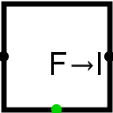

Valeur flottante vers entier
| Librairie : | Arithmétique |
| Introduction : | 3.5 |
| Apparence : |  |
Comportement
Ce composant renvoie une valeur entière sur la sortie est, qui correspond à la valeur en virgule flottante, arrondie au nombre entier le plus proche, qu'il reçoit sur l'entrée ouest. Si la donnée d'entrée contiens des signaux non définis (U), d'erreur (E) ou la valeur NaNf, il émettra sur la sortie la valeur NaNf et sur la sortie d'erreur au sud un 1
Broches
- Bord ouest :
- Entrée : la valeurs à virgule flottante à convertir. La largeur des données en bits correspond à l'attribut Dimension flottant.
- Bord est :
- Sortie : Valeur entière correspondant à la valeur de l'entrée, arrondie à l'unité la plus proche ou reçoit les bits de poids faible de la largeur des données du résultat de la conversion. Est égal à 0 en cas d'erreur. La largeur des bits correspond à l'attribut Largeur des données.
- Bord sud :
- Sortie : Erreur, prend la valeur 1 si le composant reçoit un signal d'erreur (E), indéfini (U) ou les valeurs en virgule flottante NaNf. La largeur de donnée est de 1.
Attributs
Lorsque le composant est sélectionné ou en cours d'ajout, les touches Alt-0 à Alt-9 modifient son attribut Dimension flottant. Seulement 32 ou 64 bits.
- Largeur des données
- La largeur de donnée en bit de la sortie.
- Dimension flottant
- La largeur de donnée en bit de composant 32 ou 64 bits.
Comportement de l'outil pousser
None.
Comportement de l'outil text
None.
Retour à Référence de la bibliothèque